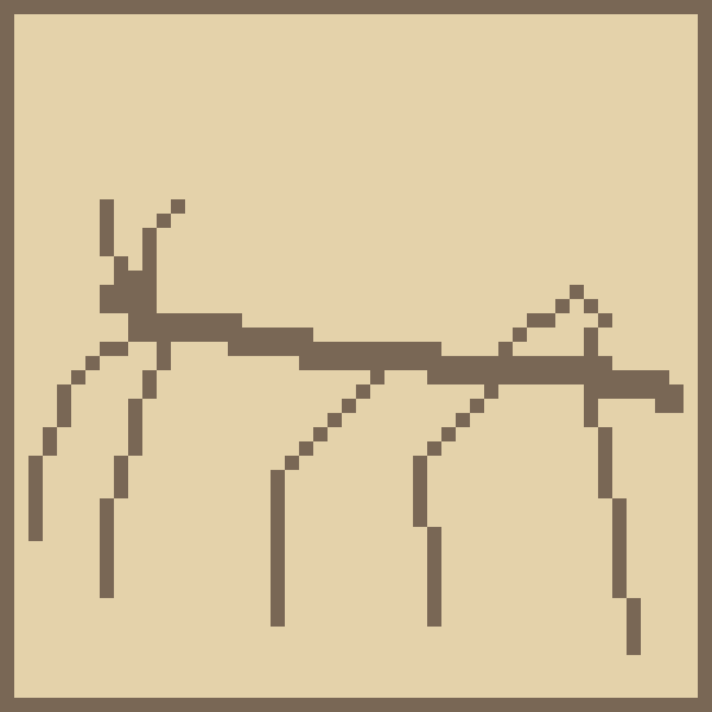
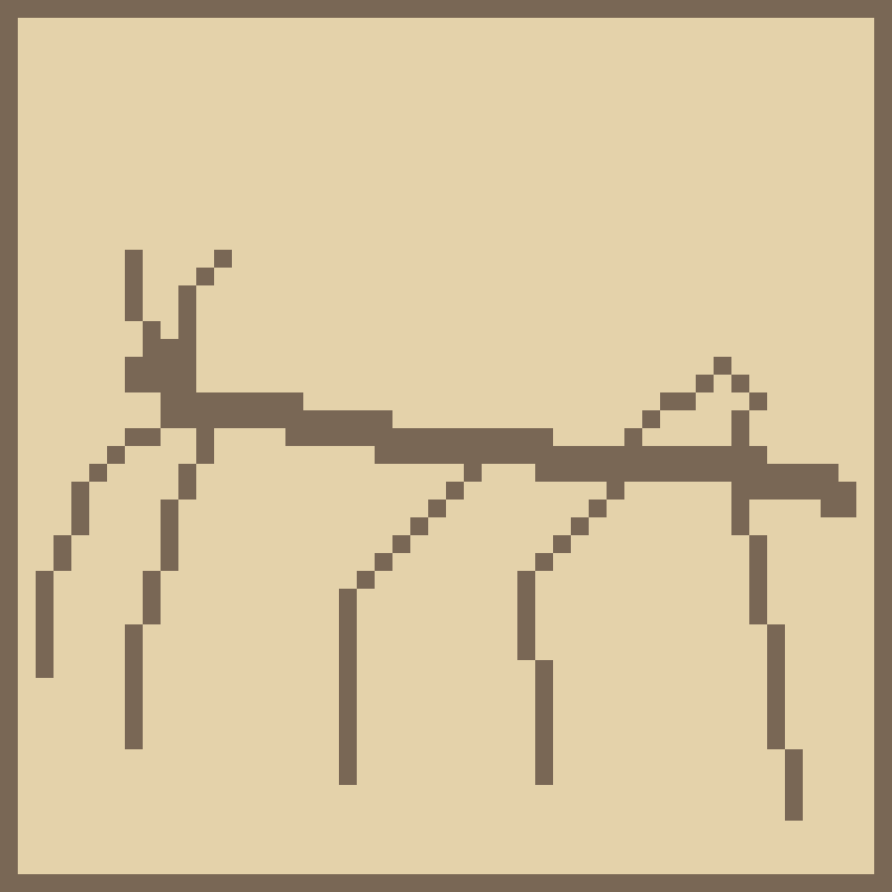

• Paint your model in Blender via Vertex Paint mode
• Export out the model to a .fbx. Default settings should be okay, but look out for "Apply Modifiers" being checked for sure.
• Drop your .fbx in Unity. Shouldn't need to touch any import settings.
• Create a new file, probably drop it in a Shaders folder, and pop in some custom shader code that should allow the Vertex Painting. Save as a .shader:
Shader "Custom/VertexColor"
{
Properties {}
SubShader {
Tags { "RenderType"="Opaque" }
LOD 100
Pass {
CGPROGRAM
#pragma vertex vert
#pragma fragment frag
#include "UnityCG.cginc"
struct appdata {
float4 vertex : POSITION;
float4 color : COLOR;
};
struct v2f {
float4 pos : SV_POSITION;
float4 color : COLOR;
};
v2f vert (appdata v) {
v2f o;
o.pos = UnityObjectToClipPos(v.vertex);
o.color = v.color;
return o;
}
fixed4 frag (v2f i) : SV_Target {
return i.color;
}
ENDCG
}
}
}
• Apply your custom shader to a material in Unity
• Apply the material with the custom shader to your fbx after dropping the fbx/prefab in your Unity scene
voila!


 
